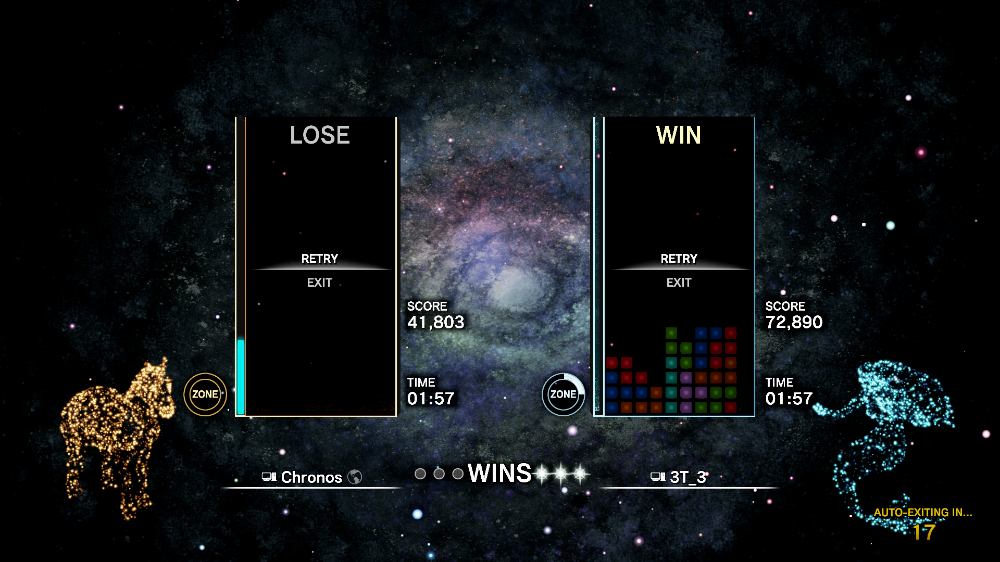

Augmented Reality Weather Widgets
Introduction
This project is used to demonstrate multiple different uses of Augmented Reality (AR) applications through the use of widgets. Includes a date widget, a time widget, a temperature and humidity widget, a wind speed and direction widget, and a current main weather condition. The project will also discuss the benefits of these widgets and their uses and future potential.
Demonstration
Instructions
Recommended - Unity 2019.4.1f1 and Vuforia 9.
Run the application in the Unity interface.
Requires a webcam or other camera.
Also requires Vuforia Mars Fiducial Markers to display each widget.
Images include the following:
- Astronaut Marker - Date widget
- Drone Marker - Time to the minute widget
- Fissure Marker - Temperature widget
- Oxygen Marker - Wind speed and direction widget
- Mars Box Front Marker - Current main condition
Download Unity3D - https://unity3d.com/
Install the following from UnityHub:
- Unity
- Documentation
- Windows Build Support (Mono)
- Mac Build Support if you want to develop on a mac
- Linux Build Support if you want to develop on a linux machine
After finishing Unity installation of 2019.4.1f1 with Unity Hub, create a Vuforia developer account: Vuforia Link
Download and install the project: Augmented Reality Weather Widgets Download
Download the images: Mars Markers
{kind=link}
Download the images: More Mars Markers
{kind=link}
Open project with Unity.
Have the 5 images listed above, can be either an actual printed picture or a web image brought up on phone or other device.
How the project should look when opened.
The project should show the following five widgets that are listed below.
The widgets:
- Date Widget - Shows the current date.
- Time Widget - Shows the current time.
- Temperature Widget - Shows the current temperature and humidity. Also reflects it with the changed sizes of the thermometer and beaker.
- Wind Widget - Shows the current wind speed and direction. Reflected with the changed height and rotation of the windsock object.
- Main Condition Widget - Shows the current main condition. Reflected with changed sounds depending on weather condition along with changed prefab objects to current main condition.
The date widget, shown with default values. (09/12/2020)
The clock widget, shown with default values. (12:57 PM)

The temperature and humidity widget, shown with default values and default object statuses. (80 F, 100%)
The wind speed and direction widget, shown with default values and default object statuses.
The main condition widget, shown with default values and default object statuses.
Resources Used:
Weather tracking and API:
Unity Assets:- 3LE Low Poly Cloud Pack by The Fallout Nerd
- Asteroids Pack by Mark Dion
- FREE Christmas Assets / Low Poly by BRAiNBOX
- Lightning Bolt Effect for Unity by Digital Ruby (Jeff Johnson)
- Vast Outer Space by Prodigious Creations
- Yughues Free Metal Materials by Nobiax / Yughues
- Sunny Day Sound by stephan
- Rain Background Sound by Mike Koenig
- Thunder Strike 2 Sound by Mike Koenig
Project Conclusion
The future of the potentials of augmented reality can be shown with this project and its widgets. When people will regularly use augmented reality glasses in the future, widgets such as the ones made here can and will for sure be implemented.
Initially, the benefits of the widgets currently used in the application do not seem to have much use currently. For instance, the date and time widgets I believe will not be extremely useful as there are clocks and date times that are displayed everywhere in the world currently from computer screens to on signs and our phones themselves. Similarly, the weather widgets such as the temperature, wind speed and directions, and current weather while can be searched up online quickly.
However, with better implementation that can happen in the future, they will be preferable in terms of being able to visualize it without being there. For instance, wind speed and direction can have such a unique implementation tailored to a specific way for people in sports such as golfing and archery, where measuring the wind is done by using other tools in order to land a perfect shot. With real time updating wind speed, a golfer or archer would be able to adjust on the fly instead of having to make a prediction on when or whether if the wind would change direction.
Likewise, the current main weather condition along with temperature and humidity can have more in depth analysis and be useful for meteorologists in determining future weather, predicting storms or other dangerous conditions from a first-person perspective rather from data alone. An example of this is for storm chasers who use a van to track dangerous weather conditions to be able to have a pair of future glasses that can look at the sky and see the types of clouds, humidity of the area, and the air flow which can be taken into account live. With this information, they can predict whether there is a danger of tornadoes, hurricanes or other possible dangerous storms.
With augmented reality glasses, these widgets can be used very easily and readably, removing our need for other devices. In fact, all the widgets would be used as we would be able to see them constantly when we wanted. For myself personally, I would use the time and date widgets early on when getting ready, along with the temperature, humidity, main weather, and wind conditions to choose my outfit in terms of cold or rainy weather or hot and dry conditions.
As a result, I believe that the future of augmented reality has a bright future with many uses as can be seen with this project. With future augmented reality glasses, I believe they would have more functional abilities, including sensors for the weather around, global positioning system tracking, and other capabilities that can enhance the performance of the widgets shown here. Likewise, we aren’t just limited to the widgets shown here, but also many more can be created with all sorts of unique functions that can be useful.